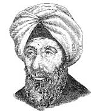

Cebirin kaşifi olan Muhammed El Harezmi (780-850), bir bilgin, astronom ve teologdu. Günümüze kadar ulaşan matematikle ilgili eserleri hem İslam hem de Hıristiyan dünyası üzerinde çok büyük bir etkiye sahiptir. Diğer başarılarının yanı sıra algoritmalar düzenlemiş ve Arap sayı sistemininin dünya genelinde yaygınlaşmasını sağlamıştır.

El Harezmi’nin günümüzde Özbekistan sınırları içerisinde bulunan bir bölgede doğduğu düşünülmektedir. Ne var ki hayatının büyük bölümünü o dönemler İslam dünyasının başkenti olarak kabul edilen Bağdat’ta geçirmiştir. Halifenin, önde gelen bilginlerden oluşan kurulu “Bilgelikler Evi”nin bir üyesiydi. Avrupa ve Asya’nın kesiştiği bir noktada bulunan Bağdatlı bilginler, doğuda Hindu matematikçilerinin, batıda ise Batlamyus ve Aristo gibi Antik Yunan düşünürlerinin eserlerine ulaşma imtiyazına sahiplerdi.
Cebir sisteminden ilk olarak, El Harezmi’nin 820 yılında yazdığı Hisab al-jabr w’al-muqabala (Tamamlama ve Denkleştirme ile Hesaplama El Kitabı) isimli eserinde bahsedilmektedir. Arapça’da bütünleme anlamına gelen al-jabr kelimesi İngilizce’ye algebra olarak geçmiştir.
Daha sonra El Harezmi, Hindu Hesap Sanatı adlı kitabını yazdı. Bu kitapta Hindu sayı sistemi anlatılmaktaydı. Kitap, yaşadığı dönemde çok popüler oldu. Kopyaları, o zamanlar Müslümanların elinde olan İspanya’da dolaşmaya başladı. Oradan Hıristiyan Avrupası’na yayıldı. Bu sayı sistemi zamanla Roma rakamlarının yerini aldı (bu sayı sistemi bir karışıklık sonucu Arap sayı sistemi olarak anılsa da El Harezmi kendi eserinde bu sistemin Hint kaynaklı olduğunu açıkça belirtmiştir).
El Harezmi aynı zamanda İslam astronomisi, coğrafya ve dini hukuk üzerine de çalışmıştır. En ünlü kitapları, halife El Memun’a (786-833) adanmıştır. Memun, “Bilgelikler Evi’’nin büyük bir destekçisi ve Bağdat’ta yaşanan “Bilginin Altın Çağı”nda önemli rol oynayan bir şahsiyettir.
Ek Bilgiler
1- Algoritma kelimesi El Harezmi’nin isminin Latince versiyonundan türetilmiştir.
2- El Harezmi’nin orijinal eserlerinin pek çoğu, Bağdat 1258 yılında Moğollar tarafından yağmalandığında kaybolmuştur. İşgalciler “Bilgelikler Evi”ni yıkmışlar ve efsaneye göre kütüphanesini Dicle Nehri’ne atmışlardır.
3- Algebra, El Harezmi’nin çalışmalarından türemiş olmasına rağmen yazarın orijinal eserinde cebirsel eşitliklere yer verilmemektedir. Harezmi, düşüncelerini sayı ve semboller kullanmadan sadece kelimelerle açıklamıştır.